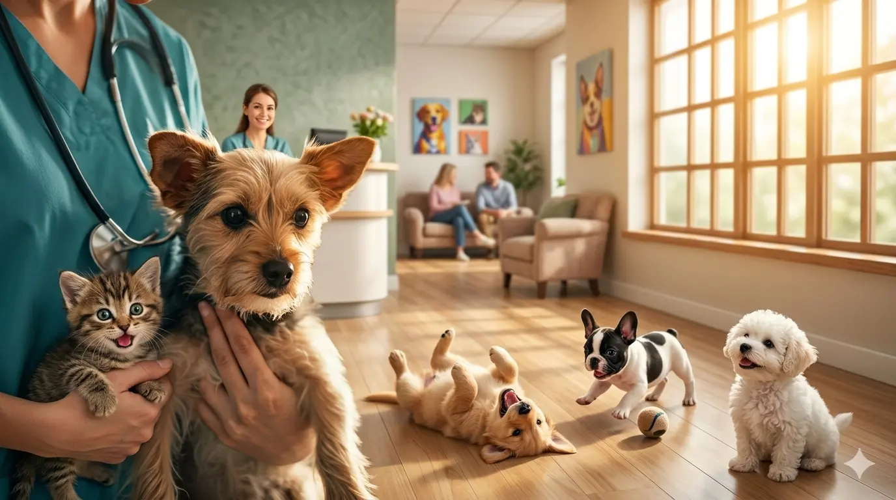

Cuidado de Excelência para Quem Mais Importa
Unimos a mais alta tecnologia médica veterinária ao acolhimento que seu pet merece. Hospital veterinário completo e aberto 24 horas por dia.
Cuidado Especializado
Infraestrutura completa para diagnósticos precisos e tratamentos complexos.
Cardiologia
Monitoramento avançado e exames de imagem específicos para a saúde cardíaca do seu pet.

Cirurgia Avançada
Equipe cirúrgica disponível 24h para procedimentos eletivos e emergenciais com máxima segurança.
Diagnóstico por Imagem
Raio-X digital, ultrassonografia com Doppler e tomografia computadorizada para laudos imediatos.
Clínica Geral e Preventiva
Acompanhamento completo, vacinação e exames de rotina.

Medicina que entende o silêncio deles.
Prontuário Digital Unificado
Todo o histórico do seu pet acessível em qualquer uma de nossas unidades em segundos.
Laboratório Próprio
Resultados de exames emergenciais em até 30 minutos para decisões rápidas e precisas.
Equipe Multidisciplinar
Especialistas em plantão constante: intensivistas, cirurgiões e clínicos.
O que dizem as famílias Sahara
"Encontramos no Sahara não apenas tecnologia de ponta, mas um carinho e paciência que nunca vimos antes. Eles salvaram o Bento em uma madrugada difícil e nos acolheram com muita calma."

Mariana & Bento
Cliente desde 2021
Onde estamos
Escolha a unidade mais próxima de você. Todas contam com pronto-atendimento 24 horas.
Unidade Jardins (Matriz)
Rua Groenlândia, 1200 - São Paulo, SP
call (11) 3456-7890
Unidade Vila Madalena
Rua Harmonia, 450 - São Paulo, SP
Unidade Moema
Av. Lavandisca, 800 - São Paulo, SP
Estamos Abertos Agora
Plantão 24h sem necessidade de agendamento para emergências.